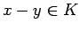
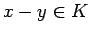
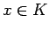
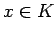

Inhalt Index DeskTop Bronstein

 Funktionalanalysis Vektorräume Geordnete Vektorräume Kegel und Halbordnung
Funktionalanalysis Vektorräume Geordnete Vektorräume Kegel und Halbordnung


Ist in einem reellen Vektorraum  ein Kegel K fixiert, so kann für gewisse Paare von Vektoren aus
ein Kegel K fixiert, so kann für gewisse Paare von Vektoren aus  eine Ordnungsrelation eingeführt werden, indem man für
eine Ordnungsrelation eingeführt werden, indem man für  mit  einfach oder schreibt und sagt, daß x größer oder gleich y bzw. y kleiner oder gleich x ist. Man nennt
mit  einfach oder schreibt und sagt, daß x größer oder gleich y bzw. y kleiner oder gleich x ist. Man nennt  oder genauer des Paar einen durch den Kegel K geordneten oder teilweise geordneten Vektorraum. Ein Element x nennt man dann positiv, wenn oder, gleichbedeutend damit,  gilt. Außerdem ist
oder genauer des Paar einen durch den Kegel K geordneten oder teilweise geordneten Vektorraum. Ein Element x nennt man dann positiv, wenn oder, gleichbedeutend damit,  gilt. Außerdem ist
| (12.25) |